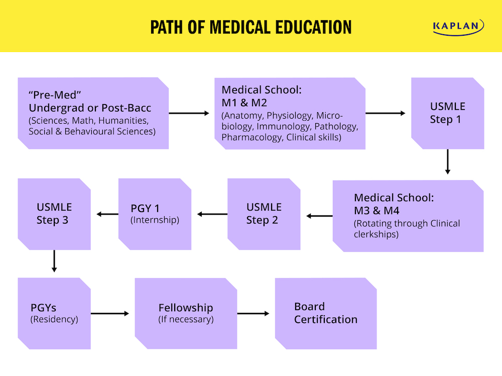

A doctor in Pakistan typically takes around 5 to 6 years of undergraduate education (MBBS), followed by a house job/internship that lasts for a year. After that, individuals usually complete a residency program, which can take several more years depending on the specialization.Do you dream of becoming a general physician? With the rising number of patients, the country is in dire need of qualified doctors. Here is your guide on how to become a general physician in Pakistan. A general physician, also called a doctor, is a highly trained medical professional specializing in all forms of non-surgical treatments. They treat chronic or acute illnesses and provides a treatment and prevention plan. It is a profession that is held in high regard and honor by people from all walks of life. The doctors’ responsibility is to save lives, assist in the birth of new life, and give hope to the sick and distressed. There are numerous diseases and disorders that afflict this planet, and natural and artificial accidents (gunshots, car accidents), so different medical problems are handled by different types of doctors based on their specialization. Medicine is one of the most desirable professions in the world and one of the most financially rewarding.
levels. This is necessary because universities and colleges that offer the MBBS degree only accept students who have completed this qualification. Because this is such a strong field in healthcare, the demand for this degree is usually quite high, so you should work hard and achieve a high score (at least 80%) during your intermediate studies. 3. MDCAT Exam An MDCAT (medical and dental college admission test) is mandatory, especially in Punjab. Scoring at least 80% is compulsory to qualify for applying to medical universities. Then, the admission is based on the merit lists of each university. 4. Five Years of Medical College After the MDCAT comes the actual mountain to climb; five years of medical college! However intimidating that may sound, hundreds of students pass out from countless medical schools each year. Yet, medical studies require a lot of time and effort.5. One Year of House Job A House job is like an experience year for new graduates, and they step into the real world of hospitals and emergencies. Under close supervision and guidance of their seniors, fresh graduates follow the medical guidelines into becoming one of the frontline superheroes of the healthcare industry. 6. Specialization Exams Those who want to specialize in a particular field such as gynecology, pediatrics, or surgery give a specialization exam. 7. Work Experience In all areas of professional life, work experience is a must. The more experienced a doctor is, the more patients trust them. It is best to go out into the professional world as soon as possible to get every ounce of experience you can get.

In short, the stethoscope helps amplify internal body sounds from the heart, lungs, and bowls. Each internal sound has a “normal” frequency range that doctors listen for. Since its first introduction to the medical world, the stethoscope has evolved in technology and what doctors look for when they listen.

scissors, used for dissecting or cutting. Thermometer, to record body temperature · Tongue depressor, for use in oral examination. Transfusion kit, to ...Syringes; Needle holders; Medicine cups; Towels; Gauze; Medical tape; Compartment trays; Forceps; Scissors. Depending on the nature of the cut, you may be able ...A thermometer is a device that measures temperature or temperature gradient. A thermometer has two important elements: a temperature sensor in which some change occurs with a change in temperature; and some means of converting this change into a numerical value.
The End if you need further help contact add this number 333 111 777